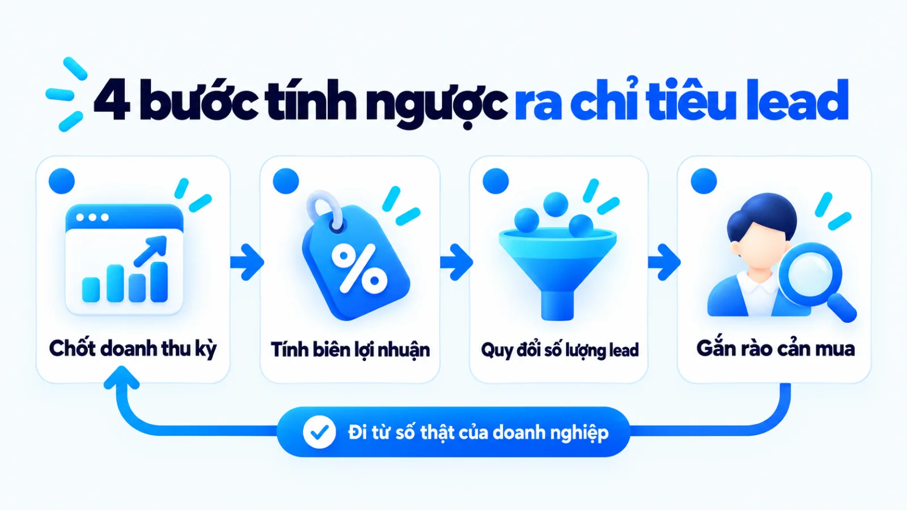

Mẫu kế hoạch Marketing là gì và cách điền cho SME
Mẫu kế hoạch Marketing là khung tài liệu vận hành giúp doanh nghiệp kết nối mục tiêu kinh doanh với khách hàng mục tiêu, hoạt động ưu tiên, ngân sách, người phụ trách và chỉ số đo lường trong một kỳ xác định. Với doanh nghiệp vừa và nhỏ, việc sao chép một biểu mẫu hàng chục trang khi thiếu dữ liệu nền thường biến việc lập kế hoạch thành thủ tục điền chữ hình thức, không dùng để điều phối thực thi được. Khi chọn đúng cấu trúc biểu mẫu vừa sức đội ngũ và khóa chặt đầu ra từng trường, người quản lý mới có căn cứ duyệt ngân sách và điều chỉnh sớm khi số liệu lệch dự kiến. Tôi là Lê Tuấn Việt, Marketing Leader tại TAKI Group. Trong bài viết này, tôi phân tích tiêu chí chọn định dạng biểu mẫu, cấu trúc chín trường cốt lõi và trình tự ra quyết định để chuyển bản mẫu thành kế hoạch vận hành thật.
- Đăng ngày
- Cập nhật

Tóm tắt nhanh
- Mẫu kế hoạch Marketing là khung ra quyết định trước khi chi tiêu, khác biệt hoàn toàn với định hướng chiến lược dài hạn, lịch đăng nội dung hàng tuần hay báo cáo kênh rời rạc.
- Doanh nghiệp vừa và nhỏ mới lập kế hoạch hoặc ít dữ liệu nên khởi đầu bằng mẫu một trang gồm chín trường cốt lõi trước khi mở rộng sang bảng kế hoạch chi tiết đa kênh.
- Thay vì điền tuần tự từng ô theo cảm tính, người phụ trách cần đi theo trình tự bốn bước mà đầu ra của bước trước khóa chặt phạm vi lựa chọn của bước tiếp theo.
- Một bản kế hoạch chỉ đủ điều kiện trình duyệt khi chứng minh được liên kết nhân quả từ doanh thu xuống KPI, khả năng đáp ứng của đội ngũ và thứ tự ưu tiên khi lệch số.
Mục lục bài viết8 phần
Mẫu kế hoạch Marketing là gì và dùng làm gì?
Mẫu kế hoạch Marketing là khung tài liệu vận hành chuẩn hóa giúp doanh nghiệp kết nối mục tiêu kinh doanh với khách hàng mục tiêu, hoạt động ưu tiên, ngân sách, người phụ trách và chỉ số đo lường trong một kỳ xác định. Thay vì chỉ liệt kê đầu việc, biểu mẫu này đóng vai trò là bản thiết kế ra quyết định trước khi giải ngân cho SME (doanh nghiệp vừa và nhỏ).
Theo giáo trình năm 2023 của OpenStax (Rice University), một kế hoạch marketing là tài liệu vận hành chuyển hóa chiến lược thành chuỗi hành động cụ thể, phân định rõ tiến độ, trách nhiệm và ngân sách. Hướng dẫn năm 2024 của Business Development Bank of Canada (BDC) cũng xác định biểu mẫu này giúp khóa rõ các hoạt động tiếp thị trong kỳ để tiếp cận và thuyết phục khách hàng mục tiêu.
Ở nhiều đội ngũ quy mô nhỏ, doanh nghiệp thường tải về những biểu mẫu dài hàng chục trang nhưng chỉ điền cho xong thủ tục trình duyệt đầu quý rồi cất vào thư mục. Khi biểu mẫu bị biến thành tờ khai hành chính thay vì công cụ điều phối, người quản lý không thể dùng nó để phân bổ nguồn lực hay kiểm tra độ lệch giữa chi phí bỏ ra và kết quả thu về.
Các thành phần của bản kế hoạch triển khai được
Để thoát khỏi tình trạng lập kế hoạch hình thức, một biểu mẫu triển khai được phải hoạt động như một chuỗi quyết định có đầu vào và đầu ra nối tiếp nhau. Bốn khối thông tin bắt buộc phải liên kết chặt chẽ trong biểu mẫu gồm:
- Đầu vào kinh doanh: Doanh thu mục tiêu, biên lợi nhuận cho phép và năng lực cung ứng trong kỳ.
- Lựa chọn trọng tâm: Phân khúc khách hàng ưu tiên, định vị khác biệt và thông điệp tháo gỡ rào cản mua hàng.
- Cấu hình nguồn lực: Tổ hợp kênh theo hành trình mua, đầu việc chính, ngân sách và lịch tuần.
- Cơ chế kiểm soát: Hệ thống chỉ số đo lường, người phụ trách cuối và ngưỡng điều chỉnh sớm.
Ranh giới giữa kế hoạch, chiến lược và chiến thuật
Một nguyên nhân phổ biến khiến người lập kế hoạch điền sai trường thông tin là đánh đồng bản kế hoạch tổng thể với chiến lược dài hạn, chiến thuật marketing hoặc lịch đăng bài. Bảng dưới đây phân biệt năm loại tài liệu quản trị theo phạm vi quyết định và đầu ra kiểm soát.
| Loại tài liệu | Phạm vi và câu hỏi trả lời | Đầu ra kiểm soát chính |
|---|---|---|
| Bản chiến lược | Định hướng dài hạn: chọn thị trường nào và thắng bằng lợi thế gì | Khung định vị thương hiệu, phân khúc mục tiêu và lợi thế cạnh tranh |
| Mẫu kế hoạch | Điều phối theo năm hoặc quý: nối mục tiêu với kênh, tiền và người làm | Bảng phân bổ ngân sách, chỉ tiêu KPI, tiến độ và ngưỡng điều chỉnh |
| Bản truyền thông | Tập trung riêng chữ P xúc tiến: thông điệp gì, phát trên kênh nào | Ma trận thông điệp, lịch chiến dịch truyền thông và chi phí kênh |
| Chiến thuật kênh | Cách làm cụ thể ở từng điểm chạm để thực hiện định hướng đã chọn | Quy trình triển khai từng hoạt động như tối ưu trang đích hay ưu đãi |
| Lịch nội dung | Điều độ sản xuất hàng tuần: đăng chủ đề gì, định dạng nào, ngày nào | Bảng tiến độ bài viết, video, người biên tập và trạng thái xuất bản |
Bảng đối chiếu trên áp dụng cho doanh nghiệp vừa và nhỏ khi cần chuẩn hóa hệ thống biểu mẫu nội bộ, giúp đội ngũ không dùng lịch đăng bài trên mạng xã hội để thay thế cho bản kế hoạch kinh doanh và tiếp thị của cả quý.
Mẫu một trang và bản kế hoạch chi tiết khác gì?
Mẫu kế hoạch Marketing một trang và bản kế hoạch chi tiết khác nhau ở độ sâu phân rã thông tin, mục đích phê duyệt và chi phí vận hành biểu mẫu. Trong khi mẫu một trang gom toàn bộ quyết định cốt lõi lên một mặt giấy để rà soát nhanh hướng đi, bản chi tiết bóc tách từng kênh, lịch chạy và ngân sách để điều phối đội ngũ hàng tuần.
Theo hướng dẫn lập kế hoạch năm 2024 của U.S. Small Business Administration (SBA) cho doanh nghiệp nhỏ tại Hoa Kỳ, định dạng kế hoạch truyền thống phù hợp khi doanh nghiệp cần trình bày chi tiết từng hạng mục vận hành hoặc thuyết phục nhà đầu tư cấp vốn, còn định dạng tinh gọn một trang chỉ giữ lại những yếu tố cốt lõi để khởi tạo nhanh và cập nhật linh hoạt.
Mẫu một trang cho quyết định cấp quản lý
Mẫu một trang tập trung vào mối quan hệ nhân quả giữa mục tiêu, nhóm khách hàng, định vị, kênh chủ lực và tổng ngân sách. Định dạng này phù hợp với doanh nghiệp mới thử nghiệm thị trường, dữ liệu lịch sử còn mỏng hoặc đội ngũ chỉ có một đến hai nhân sự kiêm nhiệm cần nhìn rõ thứ tự ưu tiên mà không bị chìm trong hàng trăm dòng bảng tính.
Bản chi tiết cho phân công và kiểm soát thực thi
Theo giáo trình năm 2023 của OpenStax (Rice University), bản kế hoạch đầy đủ gồm tóm tắt điều hành, phân tích hiện trạng, chiến lược STP (phân khúc, chọn thị trường mục tiêu, định vị), tổ hợp 4P (sản phẩm, giá, phân phối, xúc tiến), ngân sách và kiểm soát. Định dạng này phù hợp khi triển khai marketing tổng thể đa kênh, có nhóm chuyên trách hoặc cần nghiệm thu với đối tác thuê ngoài.
Để người phụ trách chọn đúng định dạng biểu mẫu theo độ chín dữ liệu và quy mô nhân sự, bảng dưới đây đối chiếu hai lựa chọn theo năm tiêu chí vận hành.
| Tiêu chí chọn | Mẫu kế hoạch một trang | Bản kế hoạch chi tiết |
|---|---|---|
| Mục đích chính | Thống nhất nhanh hướng đi, mục tiêu, định vị và trần ngân sách kỳ tới | Phân công đầu việc, lịch chạy, dự toán từng kênh và nghiệm thu tuần |
| Người sử dụng | Chủ doanh nghiệp, cấp quản lý hoặc nhóm nhỏ từ 1 đến 3 nhân sự | Marketing Leader, các nhóm chuyên môn nội bộ và đối tác thuê ngoài |
| Độ chín dữ liệu | Chưa có nhiều số liệu lịch sử, đang trong giai đoạn thử nghiệm kênh | Đã có đường cơ sở về chi phí, tỷ lệ chuyển đổi và biên lợi nhuận |
| Chu kỳ rà soát | Soạn nhanh trong vài giờ, cập nhật linh hoạt mỗi khi đổi giả định | Lập theo quý hoặc năm, đối chiếu tiến độ và chi phí cố định hàng tuần |
| Rủi ro chọn sai | Thiếu chi tiết thực thi nếu áp cho chiến dịch đa kênh quy mô lớn | Quá tải biểu mẫu, điền số đoán mò và bỏ dở khi đội ngũ còn mỏng |
Giới hạn áp dụng: bảng phân biệt trên không hàm ý bản chi tiết tốt hơn mẫu một trang; trong thực tế, tôi ưu tiên kết hợp cả hai bằng cách dùng mẫu một trang để chốt nguyên tắc với ban giám đốc trước, sau đó mới tách bảng chi tiết cho những kênh đã được duyệt ngân sách.
Bản kế hoạch Marketing hoàn chỉnh gồm những gì?
Một bản kế hoạch Marketing hoàn chỉnh cần bao gồm chín trường thông tin liên kết nhân quả từ mục tiêu kinh doanh, mục tiêu marketing, chân dung khách hàng, định vị và thông điệp, tổ hợp kênh và hoạt động, dự toán ngân sách, hệ thống KPI (chỉ số đo lường hiệu suất cốt lõi), người phụ trách đến ngưỡng điều chỉnh. Thiếu bất kỳ trường nào trong chín mắt xích này, bản kế hoạch sẽ đứt mạch từ khâu hoạch định xuống khâu thực thi.
Tài liệu hướng dẫn năm 2024 của Australian Government (business.gov.au) chỉ rõ bản kế hoạch marketing phải gắn chặt với kế hoạch kinh doanh tổng thể, xác định thị trường mục tiêu, lợi thế cạnh tranh, hoạt động theo kênh và lịch rà soát định kỳ. Đồng thời, hướng dẫn năm 2024 của U.S. Small Business Administration (SBA) yêu cầu phần marketing phải mô tả rõ cơ chế thu hút, giữ chân khách hàng để làm căn cứ tính dự phóng tài chính.
Mục tiêu kinh doanh và mục tiêu Marketing
Trường đầu tiên khóa chặt con số doanh thu, sản lượng hoặc biên lợi nhuận mà doanh nghiệp cần đạt trong kỳ. Từ con số đó, mục tiêu marketing chuyển hóa thành số lượng khách hàng tiềm năng, số đơn hàng mới hoặc tỷ lệ mua lặp lại dựa trên tỷ lệ chốt đơn thực tế của bộ phận bán hàng.
Khách hàng, định vị và thông điệp
Trường này xác định rõ nhóm người mua nào mang lại dòng tiền khả thi nhất trong kỳ, họ đang gặp rào cản gì khi ra quyết định và vì sao họ nên chọn giải pháp của doanh nghiệp thay vì phương án thay thế. Thông điệp cốt lõi được rút ra trực tiếp từ điểm giao giữa nhu cầu chưa được đáp ứng của khách và năng lực thật của sản phẩm.
Kênh, hoạt động, ngân sách và tiến độ
Thay vì liệt kê mọi nền tảng đang thịnh hành, trường này chỉ chọn các kênh có vai trò rõ ràng trên hành trình mua kèm đầu việc trọng tâm và lịch chạy theo tháng hoặc tuần. Dự toán ngân sách phải bao gồm cả chi phí mua hiển thị, chi phí sản xuất nội dung, công cụ phần mềm và một khoản dự phòng cho giai đoạn thử nghiệm.
KPI, người phụ trách và ngưỡng điều chỉnh
Theo giáo trình năm 2023 của OpenStax (Rice University), chỉ số hoạt động chung (metrics) dùng để theo dõi hiệu suất quy trình, trong khi KPI là các chỉ số cốt lõi gắn trực tiếp với mục tiêu và khung thời gian xác định. Mỗi KPI trong biểu mẫu phải gắn với một cá nhân chịu trách nhiệm cuối và một ngưỡng sai số cụ thể để biết khi nào cần dừng hoặc đổi phương án.
Để người đọc có ngay khung biểu mẫu chuẩn hóa áp dụng vào doanh nghiệp, bảng dưới đây trình bày cấu trúc mẫu kế hoạch Marketing một trang gồm chín trường kèm dữ liệu đầu vào và lỗi điền hình thức cần tránh.
| Trường biểu mẫu | Câu hỏi và dữ liệu đầu vào cần có | Lỗi điền chung chung cần tránh |
|---|---|---|
| 1. Đích doanh số | Cần đạt bao nhiêu doanh thu, đơn hàng, biên lợi nhuận gộp trong kỳ | Chỉ ghi tăng trưởng doanh số tối đa mà không có số đo và kỳ hạn |
| 2. Đích tiếp thị | Cần tạo bao nhiêu khách tiềm năng đạt chuẩn hoặc khách mua mới | Đặt mục tiêu lượt tiếp cận khi bài toán thật là thiếu đơn hàng |
| 3. Tệp khách mua | Nhóm khách nào có nhu cầu cấp thiết, khả năng chi trả và rào cản gì | Ghi đối tượng là mọi người có nhu cầu hoặc chỉ mô tả độ tuổi rộng |
| 4. Định vị chính | Lý do chọn sản phẩm là gì và bằng chứng nào giải tỏa nỗi sợ khi mua | Dùng khẩu hiệu tự khen chất lượng hàng đầu, giá cả cạnh tranh |
| 5. Kênh chủ lực | Kênh nào thu hút, kênh nào nuôi dưỡng, kênh nào chốt chuyển đổi | Liệt kê đủ mọi mạng xã hội nhưng không gắn vai trò và đầu việc |
| 6. Ngân sách kỳ | Tổng chi phí sản xuất, quảng cáo, công cụ theo tuần và quỹ dự phòng | Chỉ ghi tiền chạy quảng cáo, bỏ quên chi phí làm nội dung và nhân sự |
| 7. Chỉ số đo KPI | Chỉ số cốt lõi nào đo đầu ra kinh doanh và lấy từ nguồn dữ liệu nào | Trộn lẫn lượt thích, lượt xem trang với khách hàng tiềm năng thật |
| 8. Đầu mối chính | Ai chịu trách nhiệm kết quả từng kênh và ai phối hợp xử lý khách hàng | Ghi chung chung cả phòng marketing hoặc để trống đầu mối bên sale |
| 9. Ngưỡng cắt lỗ | Khi chi phí vượt mức nào hoặc tỷ lệ chuyển đổi tụt bao nhiêu thì sửa | Đợi hết quý mới tổng kết mà không có mốc cắt lỗ hay đổi thông điệp |
Lưu ý khi sử dụng bảng mẫu: doanh nghiệp không cần giữ nguyên độ dài mỗi ô như nhau mà nên ưu tiên diện tích cho phần mục tiêu, phân bổ ngân sách và ngưỡng điều chỉnh dựa trên dữ liệu thực tế của kỳ trước.
Cách điền mẫu kế hoạch Marketing theo 4 bước
Cách điền mẫu kế hoạch Marketing hiệu quả cho doanh nghiệp vừa và nhỏ không đi theo thứ tự ngẫu nhiên mà tuân thủ bốn bước ra quyết định: chốt đầu vào và vấn đề ưu tiên, nối mục tiêu với khách hàng và định vị, chọn kênh theo hành trình mua, sau đó phân bổ nguồn lực và thiết lập cách đo. Đầu ra của bước trước là căn cứ khóa chặt bước sau.
- 01Chốt đầu vào và điểm nghẽnRà soát dữ liệu nền, biên lợi nhuận và năng lực cung ứng để khóa 1 đến 2 mục tiêu trọng tâm.
- 02Nối mục tiêu với định vịChọn phân khúc khách hàng khả thi nhất và xác lập thông điệp kèm bằng chứng thuyết phục.
- 03Phân vai kênh theo hành trìnhGắn từng kênh với nhiệm vụ nhận biết, cân nhắc hoặc chuyển đổi phù hợp năng lực đội ngũ.
- 04Phân bổ nguồn lực và cách đoChia ngân sách theo trọng tâm, gắn người chịu trách nhiệm và tách ba tầng chỉ số đo lường.
Theo hướng dẫn lập kế hoạch thực hành năm 2024 của Business Development Bank of Canada (BDC), doanh nghiệp vừa và nhỏ cần đi từ phân tích SWOT (điểm mạnh, điểm yếu, cơ hội và thách thức), dựng hồ sơ khách hàng, đặt mục tiêu rõ ràng đến thiết lập tổ hợp tiếp thị và dự toán kiểm soát chi phí. Khi áp vào thao tác điền biểu mẫu, từng bước cần tạo ra đầu ra cụ thể dưới đây.

Bước 1: Chốt đầu vào và vấn đề ưu tiên
Người lập kế hoạch thu thập số liệu baseline (đường cơ sở) từ một đến ba tháng gần nhất gồm doanh thu, giá trị đơn hàng trung bình, tỷ lệ chốt đơn và công suất phục vụ tối đa. Phân tích SWOT tại đây không liệt kê cảm tính mà phải chỉ rõ nút thắt lớn nhất đang cản trở doanh thu, như thiếu khách mới biết đến hay tỷ lệ hỏi giá nhưng không mua quá cao.
Đầu ra: Bảng tóm tắt dữ liệu nền kèm 1 đến 2 mục tiêu marketing có số đo cụ thể, tính ngược trực tiếp từ mục tiêu doanh thu và biên lợi nhuận cho phép.
Bước 2: Nối mục tiêu với khách hàng và định vị
Từ mục tiêu đã khóa, doanh nghiệp chọn phân khúc khách hàng có nhu cầu rõ và chu kỳ mua khớp với dòng tiền. Thay vì ghi mơ hồ "Khách nữ từ 25 đến 45 tuổi thích làm đẹp", biểu mẫu cần khóa rõ điều kiện: "Nhóm nhân viên văn phòng mua lại gói chăm sóc da phục hồi, đặt lịch cuối tuần và cần minh bạch liệu trình" (ví dụ biên tập, không phải kết quả khách hàng thật).
Đầu ra: Hồ sơ phân khúc khách hàng ưu tiên, một câu định vị giá trị cốt lõi và ba nhánh thông điệp giải quyết rào cản trước khi mua.
Bước 3: Chọn kênh theo vai trò hành trình mua
Khi triển khai chiến lược digital marketing hoặc bán tại quầy, mỗi kênh trong mẫu phải gắn rõ vai trò trên hành trình mua. Với đội ngũ mỏng, tôi ưu tiên cắt bỏ các kênh chỉ tạo bề nổi mà thiếu người chăm sóc, dồn nguồn lực vào một kênh thu hút nhu cầu và một kênh chuyển đổi như kế hoạch chạy quảng cáo Facebook kết hợp tư vấn qua tin nhắn.
Đầu ra: Danh mục kênh được chọn kèm vai trò trên phễu, đầu việc chính mỗi tuần và quy ước bàn giao khách hàng tiềm năng cho bộ phận bán hàng.
Bước 4: Phân bổ nguồn lực và thiết lập cách đo
Ở bước cuối, người quản lý chia ngân sách theo trọng số kênh, gắn người phụ trách và lập bảng chỉ số. Theo giáo trình năm 2023 của OpenStax (Rice University), đo lường theo kỳ giúp phát hiện sớm độ lệch để điều chỉnh kịp thời. Tài liệu năm 2024 của Google Analytics Help cũng lưu ý một chuyển đổi thường đi qua nhiều điểm chạm nên số liệu phụ thuộc vào mô hình quy kết (attribution) từng kênh.
Đầu ra: Bảng dự toán ngân sách khớp trần chi phí, lịch đọc số liệu định kỳ và khung đo lường tách bạch tín hiệu tương tác, khách tiềm năng đạt chuẩn với doanh thu thực.
Nhiều người lập kế hoạch tự hỏi: điền đủ bốn bước trên thì có cần làm thêm báo cáo riêng từng ngày không? Câu trả lời nằm ở quỹ thời gian của đội ngũ: nếu báo cáo ngày lấy mất giờ tối ưu chiến dịch và chăm sóc khách, doanh nghiệp chỉ cần giữ lịch kiểm số hàng tuần và dùng luồng công việc có AI để tổng hợp dữ liệu thô trước buổi họp.
Ví dụ mẫu kế hoạch Marketing cho một SME
Ví dụ mẫu kế hoạch Marketing dưới đây là một ví dụ biên tập, không phải kết quả khách hàng thật, minh họa cách một doanh nghiệp dịch vụ quy mô vừa và nhỏ chuyển mục tiêu doanh thu quý thành bản kế hoạch một trang có ngân sách giả định, phân công nhân sự và ngưỡng điều chỉnh rõ ràng.
Ví dụ biên tập, không phải kết quả khách hàng thật
Bản kế hoạch Marketing quý cho phòng khám nha khoa quy mô nhỏ tại Hà Nội
Giả định một phòng khám nha khoa có 2 nhân sự marketing và 2 tư vấn viên đặt mục tiêu giả định 600 triệu đồng doanh thu trong quý, tương ứng 40 ca điều trị ở mức 15 triệu đồng mỗi ca. Theo tỷ lệ lịch sử giả định có 25% khách đến khám đồng ý làm dịch vụ và 40% người để lại số điện thoại thực sự đến khám, cơ sở cần 160 lượt đến khám và 400 khách tiềm năng đạt chuẩn.
- 400
- Khách tiềm năng giả định
- 160
- Lượt đặt lịch đến khám
- 40
- Ca điều trị hoàn tất
Bối cảnh và giả định của ví dụ biên tập
Trong ví dụ biên tập này, biên lợi nhuận của phòng khám cho phép chi tối đa 15% doanh thu cho hoạt động marketing, tương đương tổng ngân sách giả định 90 triệu đồng cho cả quý (30 triệu đồng mỗi tháng). Như vậy, ngưỡng CPL (chi phí trên một khách hàng tiềm năng) đạt chuẩn tối đa không được vượt quá 225.000 đồng, và CPA (chi phí thu hút một ca điều trị thành công) tối đa là 2,25 triệu đồng.
Chuyển mục tiêu thành việc có người phụ trách
Với hai nhân sự marketing, phòng khám trong ví dụ biên tập này chỉ khóa hai kênh trọng tâm trên mẫu kế hoạch một trang: bài viết chuyên môn trên website đón nhu cầu tìm kiếm và quảng cáo tin nhắn Facebook quanh bán kính cơ sở. Nhân sự nội dung phụ trách sản xuất 24 bài giải thích quy trình cùng bảng giá; nhân sự quảng cáo quản lý ngân sách và đối chiếu chất lượng số điện thoại hàng ngày với nhóm tư vấn.
Đặt nhịp rà soát và điều kiện điều chỉnh
Thay vì chờ hết quý mới tổng kết, bản kế hoạch trong ví dụ biên tập quy định lịch rà soát vào thứ Hai hàng tuần và chốt ngưỡng điều chỉnh sau mỗi hai tuần. Nếu qua hai tuần chạy thử mà CPL vượt mốc giả định 270.000 đồng dù tỷ lệ nhấp vẫn tốt, đội ngũ phải kiểm tra kịch bản tin nhắn và tốc độ gọi lại của tư vấn viên trước khi đổi tệp khách hàng.
Cách kiểm tra kế hoạch trước khi trình duyệt
Một bản kế hoạch Marketing chỉ đủ điều kiện trình duyệt và giải ngân khi vượt qua ba chốt kiểm tra: tính liên kết nhân quả giữa mục tiêu với hoạt động, tính khả thi của dữ liệu cùng nguồn lực vận hành, và cơ chế phân định trách nhiệm rõ ràng khi số liệu thực tế lệch khỏi dự kiến.
Sự liên kết giữa mục tiêu, hoạt động và chỉ số
Người duyệt kế hoạch cần kiểm tra ngược từ dưới lên: nếu mọi đầu việc trong bảng đều hoàn thành đúng hạn thì có tạo đủ khách hàng tiềm năng để đạt mục tiêu doanh thu hay không. Một lỗi phổ biến là mục tiêu đầu bảng ghi tăng doanh số sản phẩm chủ lực, nhưng phần hoạt động bên dưới lại dồn phần lớn thời gian vào các trò chơi tặng quà nhỏ thu hút người xem không có nhu cầu mua thật.
Tính khả thi của dữ liệu, ngân sách và vận hành
Theo nguyên tắc kiểm soát trong tài liệu năm 2024 của U.S. Small Business Administration (SBA) và OpenStax (Rice University), dự phóng chỉ đáng tin khi dựa trên năng lực thực thi có thật. Nếu bản kế hoạch yêu cầu xuất bản mỗi ngày hai video và bốn bài viết chuyên sâu trong khi phòng marketing chỉ có một nhân sự kiêm nhiệm và không có ngân sách thuê ngoài, bản kế hoạch đó chắc chắn vỡ tiến độ ngay từ tuần thứ hai.
Trách nhiệm duyệt, thực hiện và báo cáo
Khi số liệu thực tế lệch kế hoạch, người quản lý không nên vội hạ mục tiêu kinh doanh. Thứ tự ưu tiên là kiểm tra chất lượng thực thi và tốc độ xử lý khách tại điểm chạm trước, tiếp theo mới chuyển ngân sách sang nhóm nội dung hiệu quả hơn, và chỉ sửa mục tiêu kỳ khi nguồn cung hoặc thị trường biến động lớn. Trước khi ký duyệt, hãy kiểm tra bảy câu hỏi tự đánh giá dưới đây:
- Mục tiêu marketing đã được tính ngược từ chỉ tiêu doanh thu, biên lợi nhuận và tỷ lệ chốt đơn thực tế của đội bán hàng hay chưa?
- Chân dung khách hàng và thông điệp trong mẫu đã chỉ rõ rào cản mua hàng cụ thể thay vì mô tả nhân khẩu học chung chung chưa?
- Mỗi kênh được chọn đã có vai trò rõ ràng trên hành trình mua và đã lược bỏ những kênh vượt quá sức người làm chưa?
- Dự toán ngân sách đã tính đủ chi phí sản xuất nội dung, công cụ, thuế phí và tách riêng khoản dự phòng thử nghiệm hay chưa?
- Bảng KPI đã tách bạch chỉ số tương tác bề nổi tại kênh với số lượng khách tiềm năng đạt chuẩn và doanh thu thực thu chưa?
- Mỗi hạng mục công việc và chỉ số KPI đã gắn tên một người chịu trách nhiệm chính kèm lịch đối chiếu số liệu hàng tuần chưa?
- Bản kế hoạch đã ghi rõ ngưỡng cắt lỗ hoặc điều kiện chuyển ngân sách khi chi phí thực tế vượt mức cho phép hay chưa?
Nguyên tắc duyệt kế hoạch cho SME
Một mẫu kế hoạch một trang điền dựa trên dữ liệu nền thật và có lịch kiểm số hàng tuần luôn có giá trị điều phối cao hơn một tệp kế hoạch năm chục trang sao chép định mức từ ngành khác. Biểu mẫu tốt phải giúp giảm thời gian họp chứ không tạo thêm gánh nặng báo cáo.
Câu hỏi thường gặp về mẫu kế hoạch Marketing
Mẫu kế hoạch Marketing khác lịch nội dung thế nào?
Mẫu kế hoạch Marketing khác lịch nội dung ở phạm vi quyết định và cấp độ quản trị. Trong khi mẫu kế hoạch bao quát từ mục tiêu kinh doanh, phân khúc khách hàng, định vị, ngân sách đến KPI toàn kỳ, lịch nội dung chỉ là bảng tiến độ đăng bài thực thi nằm bên dưới một kênh truyền thông sau khi kế hoạch tổng thể đã được duyệt.
SME mới lập kế hoạch lần đầu nên bắt đầu từ đâu?
Doanh nghiệp vừa và nhỏ nên bắt đầu bằng mẫu kế hoạch một trang cho chu kỳ một quý và chỉ tập trung vào một đến hai kênh sát nhất với hành vi mua của khách hàng hiện tại. Trước khi điền biểu mẫu, người phụ trách cần khóa rõ mục tiêu doanh thu, biên lợi nhuận cho phép chi cho marketing và công suất tiếp nhận khách hàng tiềm năng của đội sale.
Thiếu dữ liệu lịch sử thì điền chỉ tiêu KPI thế nào?
Khi chưa có dữ liệu lịch sử, doanh nghiệp không nên áp một con số KPI cố định cho cả năm mà cần tách tháng đầu tiên làm giai đoạn chạy thử để đo đường cơ sở thực tế. Trong bản mẫu, chỉ tiêu giai đoạn đầu được ghi theo biên độ giả định kèm điều kiện cập nhật lại định mức chi phí ngay khi tích lũy đủ mẫu dữ liệu.
Bao lâu nên rà soát và cập nhật bản kế hoạch một lần?
Khung kế hoạch tổng thể thường được thiết lập theo năm hoặc theo quý, nhưng lịch đối chiếu tiến độ và chỉ số thực thi cần diễn ra đều đặn hàng tuần hoặc hai tuần một lần. Cuối mỗi quý, người quản lý phải tổng kết độ lệch giữa kết quả thực tế với kế hoạch gốc để tái phân bổ ngân sách cho kỳ tiếp theo.
Khi nào SME chưa nên dùng bản kế hoạch nhiều trường?
Không, doanh nghiệp chưa nên dùng bản kế hoạch chi tiết nhiều trường khi sản phẩm chưa có tệp khách mua lặp lại, đội ngũ chỉ có một đến hai nhân sự kiêm nhiệm hoặc chưa có hệ thống ghi nhận nguồn khách cơ bản. Ở giai đoạn này, biểu mẫu phức tạp khiến nhân sự mất thời gian điền số liệu phỏng đoán thay vì tập trung thử nghiệm thông điệp và kênh bán hàng.
Vì sao số liệu báo cáo kênh lệch với doanh thu thực?
Số liệu báo cáo kênh thường lệch với doanh thu thực vì các nền tảng quảng cáo và công cụ phân tích web áp dụng mô hình quy kết khác nhau, khiến một đơn hàng đi qua nhiều điểm chạm bị tính trùng ở nhiều nơi. Do đó, mẫu kế hoạch cần tách bạch cột chỉ số tối ưu tại kênh với cột doanh thu thực thu trên hệ thống quản lý bán hàng.
Kết luận
Giá trị cốt lõi của một mẫu kế hoạch Marketing không nằm ở độ phức tạp của bảng biểu mà ở khả năng kết nối nhân quả giữa mục tiêu doanh thu, lựa chọn khách hàng, giới hạn ngân sách và kỷ luật rà soát định kỳ. Chọn đúng định dạng mẫu vừa sức giúp đội ngũ nhìn rõ việc cần ưu tiên và biết ngay khâu nào đang lệch chuẩn khi vận hành.
Ngay trong tuần này, bạn có thể lấy số liệu doanh thu và chi phí của ba tháng gần nhất, điền thử vào khung chín trường của mẫu kế hoạch một trang cho sản phẩm chủ lực và kiểm tra lại bằng bảy câu hỏi tự đánh giá ở mục trên. Bạn cũng có thể tham khảo thêm các bài viết cùng hệ thống tại chuyên mục Quản trị Marketing để hoàn thiện quy trình phối hợp nội bộ.
Trong trường hợp doanh nghiệp đang chạy nhiều kênh rời rạc, số liệu giữa marketing và bán hàng lệch nhau hoặc chưa xây được định mức chi phí chuẩn để giao KPI cho đội ngũ, việc chỉnh sửa từng ô lẻ trên biểu mẫu sẽ không giải quyết tận gốc điểm nghẽn mà cần một khung hoạch định và đo lường đồng bộ.
Bản kế hoạch quý tới của doanh nghiệp bạn đang vướng ở khâu xác lập dữ liệu nền, phân bổ ngân sách giữa các kênh hay thiết lập ngưỡng kiểm soát thực thi cho đội ngũ?